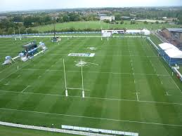

this the way people do something for a certain goal
in sports there many things you can do
and we are going to see them one by one starting with:
soccer is the way people are allinged to go to the opponents goal to win some points. but in some situations there are draws and losses. in soccer you cannot expect to always win in soccer there are 11 players and those 11 players make a plan and that plan is called a formation and a game plan.

In soccer people get better by practice. kids cannot play on a real pitch with realplayers they practice at academies

for those of you who want to join the academy above [TSA] contact 0705199475 [ watsapp] /0773400546 /thesocceracademyblog.wordpress.com
when playing soccer you need to wear special attire like a jersey


in soccer people play on a pitch because there cant play on concrete

in soccer with out a formations it is like people ruunning on a pitch with a ball trying to score. and you cant just play any team you find . that is why we have leagues like
in different leagues there are different soccer balls
rugby is a type of football developed at rugby school in rugby,warwickshire.
as we all know this is a type of football where people hold the ball which look like this
i wont talk much about rugby i will about two things formation and the pitch
in formation i just want to say it is like soccer. just there are 15 players put in different positions.

in the pitch it is players trying to go to the opponents goal to score
